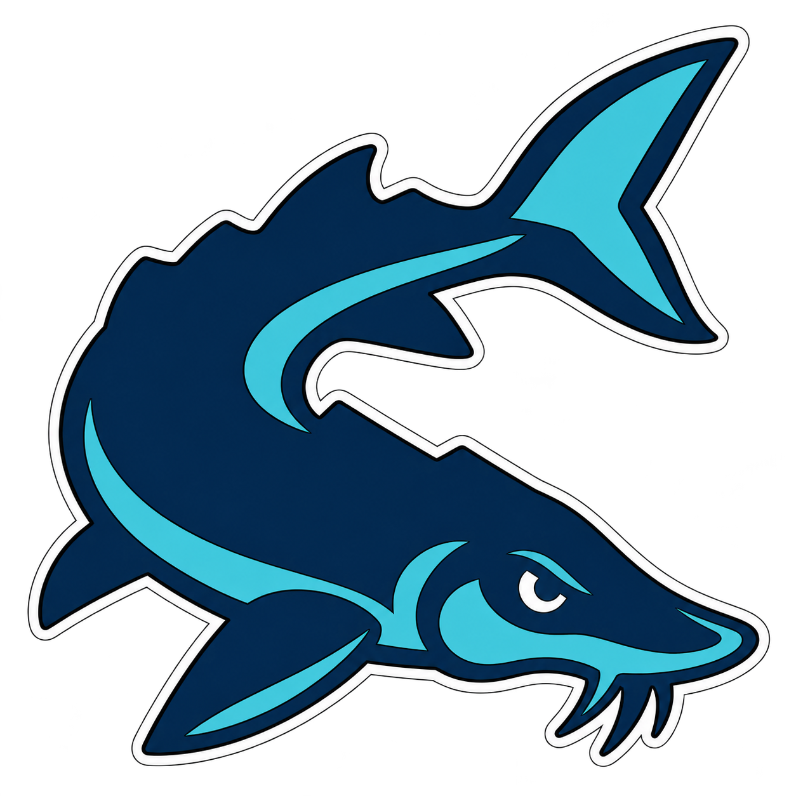
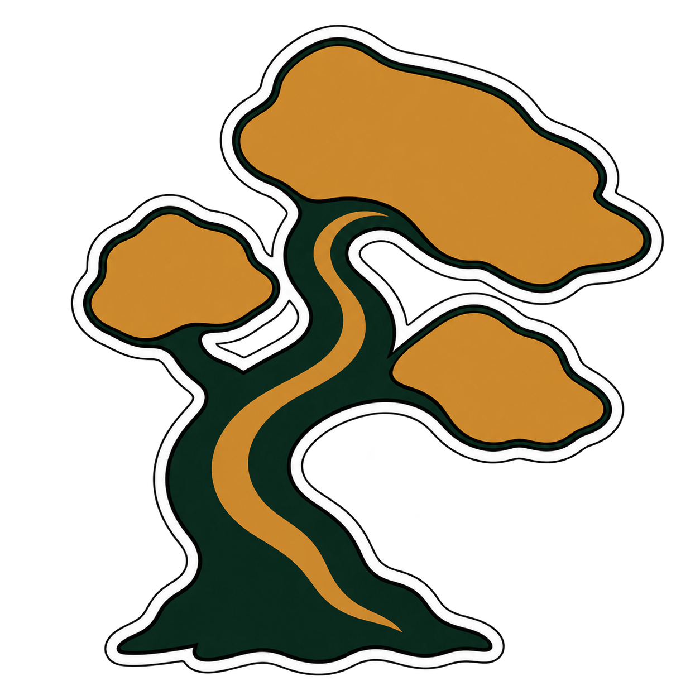
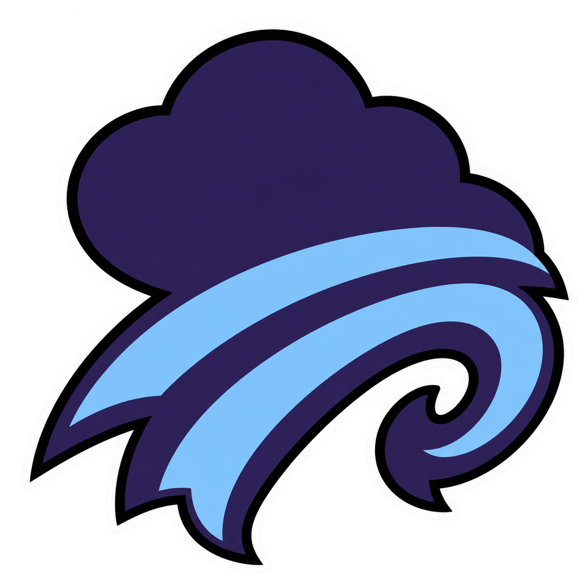
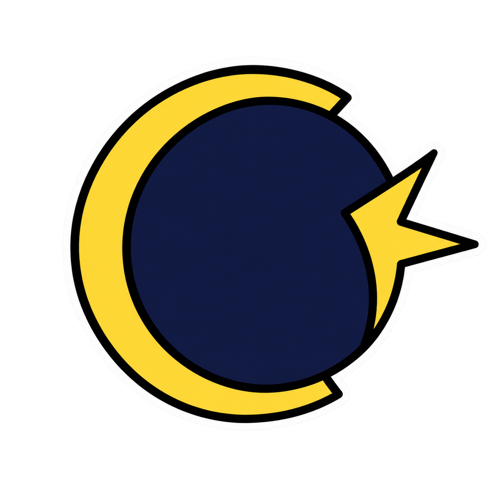
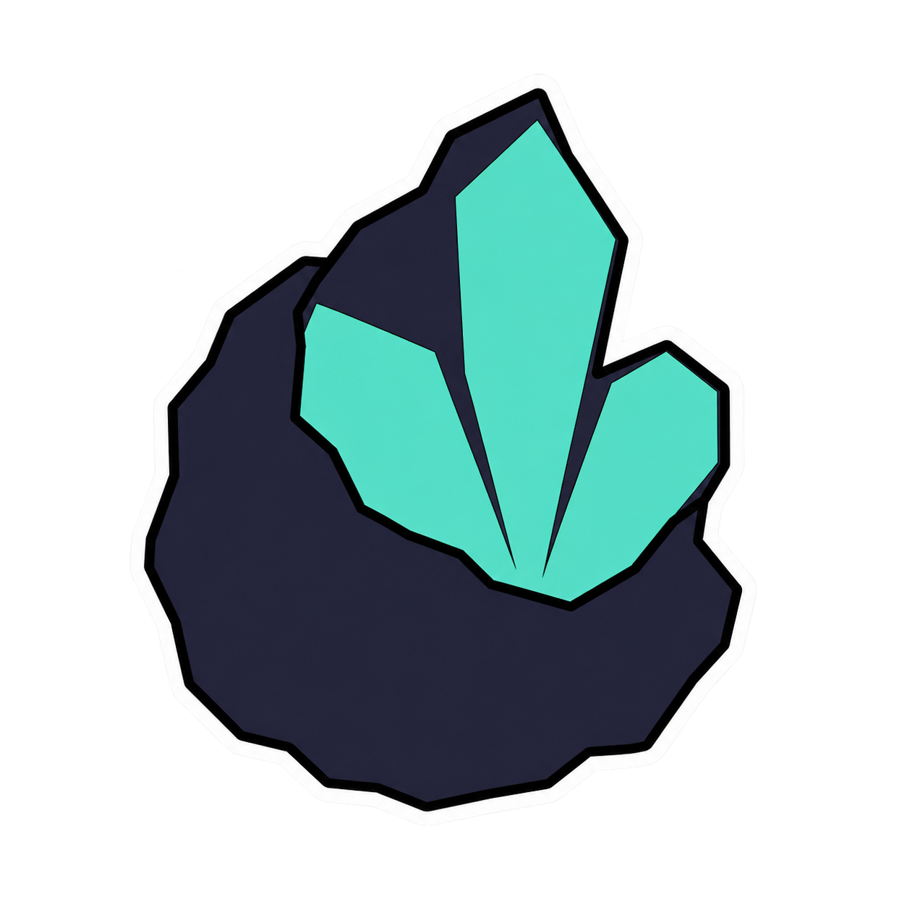

Aquatic life
Rexburg A&M Cedar Sturgeons
Replaces: Rexburg A&M Cedar Ironsides
Full-body aquatic subject; fins, tail and body make one turning silhouette. Never a head-only mascot or underwater scene.
#123B5D#58C9D420
32
44 pt
Calibration set for the 38 selected rebrands. Each family uses a new subject type and composition rule; all marks are shown on split light/dark surfaces and at the app’s three draw sizes.

Aquatic life
Replaces: Rexburg A&M Cedar Ironsides
Full-body aquatic subject; fins, tail and body make one turning silhouette. Never a head-only mascot or underwater scene.
#123B5D#58C9D4
Botanical life
Replaces: Hood River Maritime Iron Coopers
One plant, flower, seed or fungus in a radial or rising silhouette. No shield, landscape, pot or decorative wreath.
#273A2D#C68F4A
Atmospheric phenomena
Replaces: Ocean City Agricultural Thunder Sawyers
One environmental force built from a cloud mass, pressure arc or wind band. No horizon, scenery or weather map.
#34265C#8FC7F2
Celestial phenomena
Replaces: Buckeye Poly Tidal Tanners
One astronomical event built from orbital or occultation geometry. No generic star badge, telescope or sky scene.
#191A3D#E0CF55Invertebrate life
Replaces: Oneonta Hollow Kestrels
Full-body or top-down arthropod subject. Wings, claws and segments simplify into one silhouette; never a mascot head.
#322642#BBD56B
Geological forms
Replaces: Siloam Springs Poly Meridian Ironsides
One isolated formation shown as a monolith, cutaway or cross-section. No landscape, horizon or mountain panorama.
#30304A#63C7B2